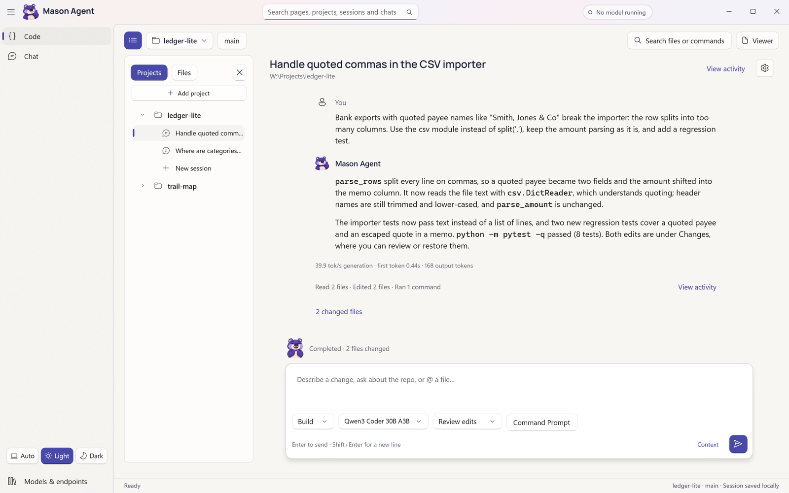
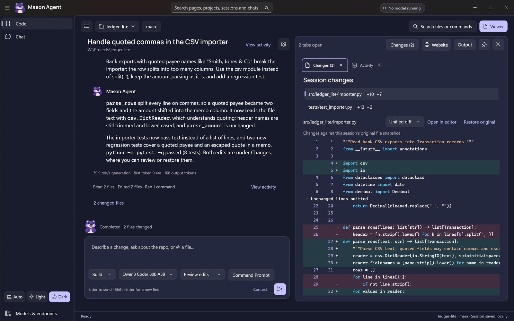
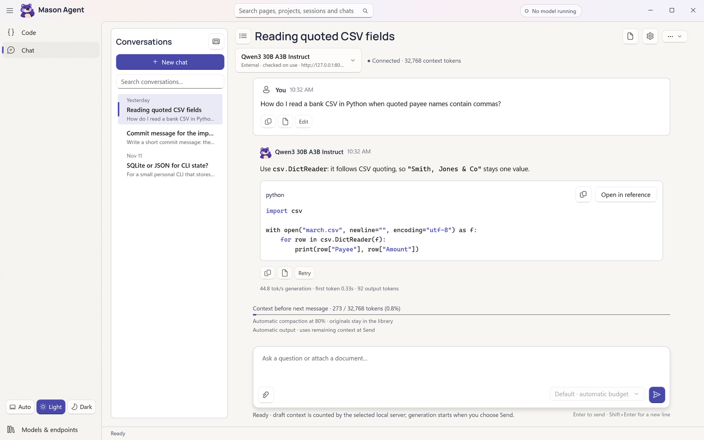
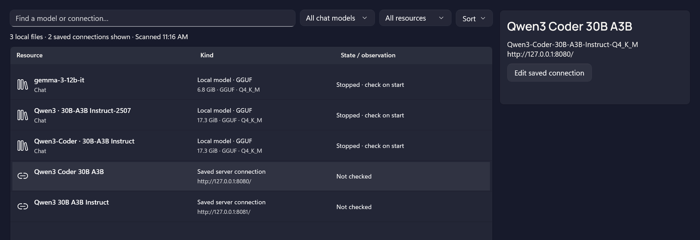

Local coding agent for Windows
Make the next move clear.
Mason Agent is a coding workspace that runs on your own local models. Add a project, decide what the agent may do, and review every change before you keep it.
Version 1.7.2 · Installer 106 MB · ZIP 125 MB · Windows x64


A workspace with room to think
Your code, your workspace, your local models. Everything stays on your computer.
-
Projects keep their history
Add a folder and Mason Agent keeps its coding sessions, files and changes together, with the Git branch in view. Sessions are saved in your local profile.
-
Runs on your own models
Start GGUF models with a llama.cpp server or Transformers models with Python, or connect to an OpenAI-compatible server already running on this computer.
-
You set the permissions
New sessions start read-only. Choose Review edits to approve each edit and command, Workspace edits, or Auto, which runs commands in a Windows sandbox limited to the project folder.
-
Every change on record
Edits show as diffs against the original file, which you can restore. The activity log lists each file read, edit and command with its result.
-
Chat beside your code
Talk a problem through with any connected model, with code blocks, tables and attached documents. Long conversations compact automatically; the originals stay in the library.
-
A model library
Scan your folders for GGUF and safetensors weights, see whether a model fits in your GPU memory, and download models from Hugging Face when you choose to.
Screenshots
Light and dark follow your Windows setting, or pick one in the sidebar.




Download Mason Agent
Version 1.7.2 for Windows x64. Free to download from GitHub Releases.
Installer or portable
The installer sets Mason Agent up for your Windows account, with no administrator rights needed. The portable ZIP runs from any folder: extract it and start MasonAgent.exe. Put an empty portable.flag file beside it to keep settings and sessions in a data folder next to the app.
Requirements
- Windows 11, x64. The portable ZIP also runs on Windows 10 version 2004 or later.
- A local model: GGUF weights with llama.cpp's
llama-server, Transformers weights with Python, or an OpenAI-compatible server on this computer. Set it up under Models & endpoints. - Optional: Git for Windows, to use Git Bash as a shell for commands.
Windows SmartScreen: releases are not code-signed yet, so Windows may warn the first time you run them. Choose More info → Run anyway. SHA-256 files are attached to each release if you want to verify a download.